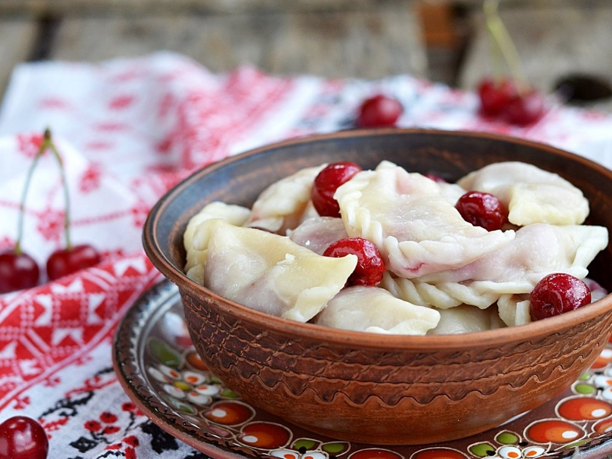
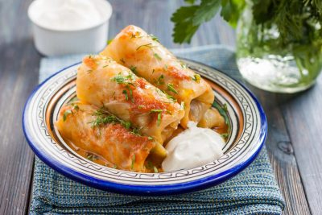

Борщ

Український борщ - це традиційна страва української кухні, яка вважається однією з найпопулярніших у світі. В основі борщу лежить бульйон, приготовлений з м'яса (зазвичай свинини або яловичини), який набуває насиченого смаку і аромату. Основні інгредієнти борщу - це свіжі овочі, такі як буряк, картопля, морква, капуста та цибуля. Також до складу борщу можуть входити томатна паста, часник, спеції та зелень, такі як петрушка і кроп. Традиційно борщ подається з ложкою вершків або сметани, яка надає йому ніжності і кремовості. Ця страва відома своїм насиченим червоним кольором, який надає їй буряковий сік. Український борщ - це не просто страва, а символ української культури і традицій, який часто включають до святкових обідів та родинних зібрань. Багатство смаку та поживна цінність борщу роблять його улюбленою стравою не тільки серед українців, а й серед людей з різних країн світу. Український борщ - це діамант у кулінарному світі, який продовжує захоплювати смаки і серця гурманів усього світу.
Вареники
Українські вареники - це національна страва, яка займає особливе місце в українській кухні. Вони представляють собою тонке тісто, що обгортає смачну начинку. Вареники можна приготувати з різними начинками, такими як картопля, сир, гриби, м'ясо або солодкі ягоди. Традиційно, вареники готуються вдома, під час свят або особливих родинних подій. Вони часто стають основою для зустрічей із друзями та родиною, спільного приготування та смачного обіду. Для приготування вареників, тісто замішують з муки, яйцями та водою. Потім розкатують його на тонкі шматочки та вирізують кружальцями. Начинку кладуть на центр кружалечка та обгортають його, утворюючи кульку або півмісяць. Після того, як вареники скручені, їх варять у киплячій воді до готовності. Вони повинні стати м'якими, але не розвалюватися. Готові вареники зазвичай подаються з вершковим маслом, сметаною або цукром. Вареники - це не тільки смачна страва, але й символ української культури та гостинності. Вони є важливою частиною української традиції і часто асоціюються з багатими смаками та затишком українського сімейного життя. Вареники можна знайти в багатьох ресторанах по всьому світу, де вони популярні серед туристів та любителів кулінарних вишуканостей. Ця українська страва завжди приносить задоволення тим, хто її спробував, своїм неповторним смаком і ароматом. Не дарма вареники є одним з найвідоміших символів української кухні, які варто скуштувати, щоб пережити справжню кулінарну радість України.
Голубці
Українські голубці - це традиційна страва української кухні. Голубці приготовляються з м'ясною начинкою, зазвичай з фаршу з яловичини або свинини. Капустні листки використовуються як обгортка для начинки, що робить страву соковитою та ароматною. Крім м'яса, до начинки можуть додаватись рис, цибуля, спеції та інші інгредієнти. Голубці запікаються або тушкуються в соусі, що надає їм неповторний смак. Ця страва часто готується на святкові та родинні заходи, і її смак щиро пов'язаний з українською культурою. Українські голубці визнані як смачна та поживна страва, що здатна наситити і задовольнити смакові пристрасті. Традиційно подають голубці з кислою сметаною або соусом, а також з смаженою цибулею. Українські голубці - це гостинець, який розчиняє серце своєю теплою та затишною атмосферою української кухні.